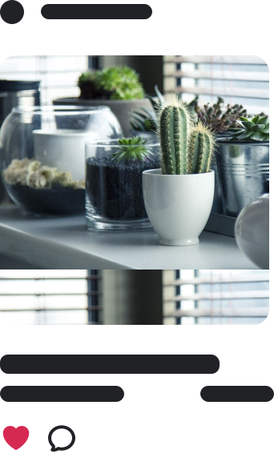

모두의 정원은,
식물 정보를 공유하고
상품을 홍보 및 판매할 수 있는
소셜 미디어입니다.
식물 정보를 공유하고
상품을 홍보 및 판매할 수 있는
소셜 미디어입니다.
식물 정보를 공유
상품을 홍보 및 판매
소셜 미디어
상품을 홍보 및 판매
소셜 미디어
사용 기술
Kotlin
Jetpack Compose
Glide
Gson
Firebase Cloud Messaging
Retrofit2
탐색 디자인

포스트 디자인

주요 기능
포스트
식물과 관련된 이야기를 작성할 수 있습니다. 사진을 주 컨텐츠로 설계하였으며, 사진을 설명하는 내용과 함께 하나의 포스트를 이루고 있습니다.
큐레이션
외부 플랫폼에서 작성된 글을 가져올 수 있습니다. 나를 팔로우 하고 있는 다른 사용자에게 글을 공유하기 위함입니다. 대표 사진, 제목과 함께 링크가 제공됩니다. 컨텐츠의 질을 높이기 위해 큐레이션은 큐레이터만 작성할 수 있도록 제한을 두고 있습니다.
탐색
내가 팔로우 하지 않은 사용자가 올린 컨텐츠에 접근할 수 있습니다. 모두의 정원을 사용하고 있는 모든 사용자들이 올린 컨텐츠는 탐색 피드에 공통적으로 표시됩니다. 카테고리와 컨텐츠 형태를 기준으로 컨텐츠에 접근할 수 있습니다.
배운 점
PM으로서,
- 어떤 팀을 이끌어 나간다는 것은 생각보다 더 많은 책임이 따른다는 것을 느낌.
- 생산적인 팀이 되기 위해서 개개인의 능력도 중요하지만, 협업이 당연시되는 팀의 분위기를 만드는 것이 더 중요하다는 것을 알게 됨.
- Notion 등 협업 툴을 이용해 일정을 계획하는 방법을 배움.
- KPT 회고를 도입하여, 문제를 빠르게 인식할 수 있도록 하는 방법을 배움.
Android 개발자로서,
- Jetpack Compose를 이용한 선언형 프로그래밍 방식을 익숙하게 다룰 수 있음.
- Firebase를 이용하여 구글 로그인을 연동하는 방법을 알게 됨.
- Google Maps SDK를 이용하여 구글 지도를 연동하는 방법을 알게 됨.
- MVVM 아키텍처를 도입함으로써, ViewModel의 역할을 알게 됨.
- Room 로컬 데이터베이스의 사용법을 알게 됨.
프로필 디자인